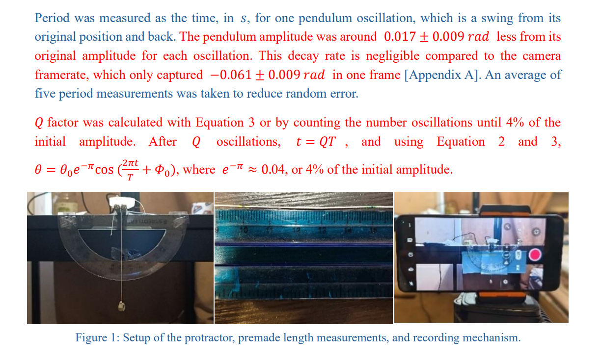
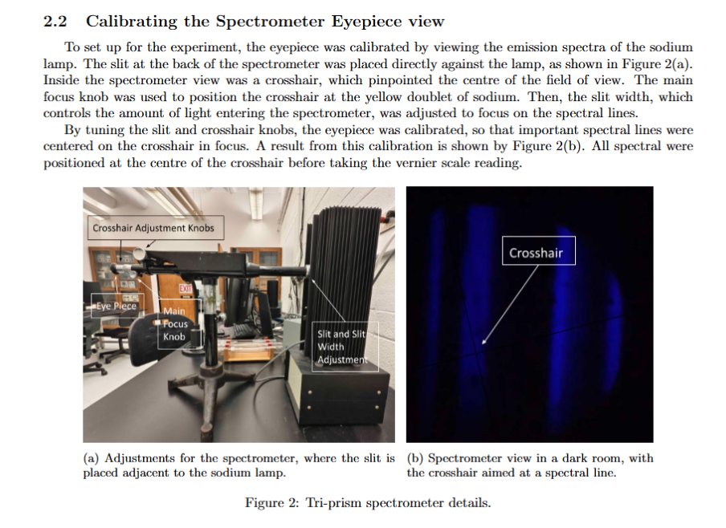
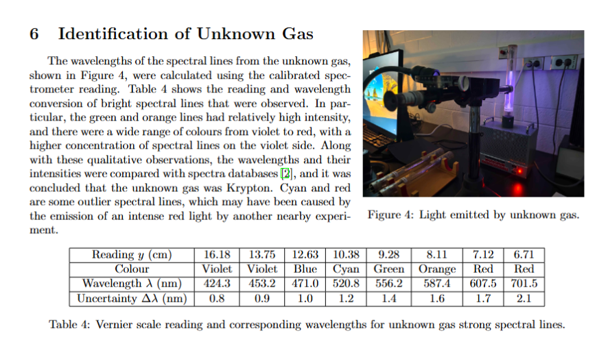
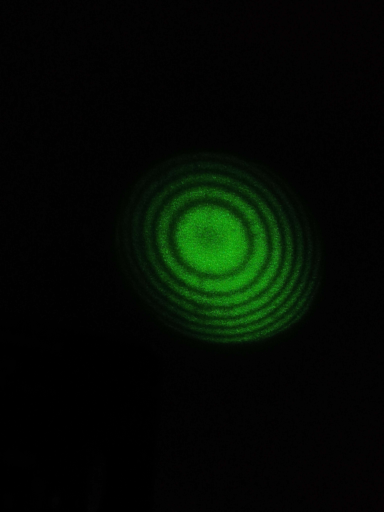
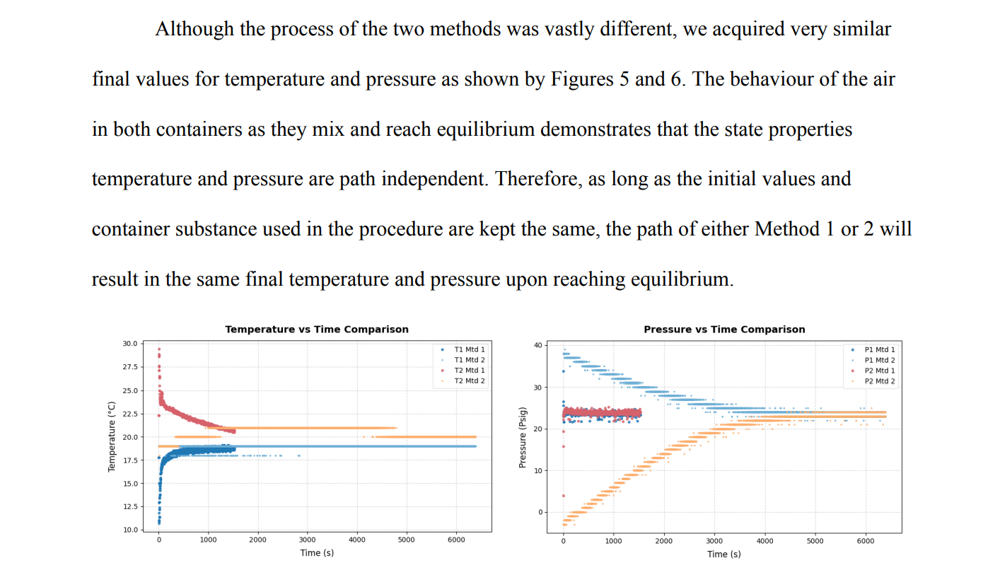
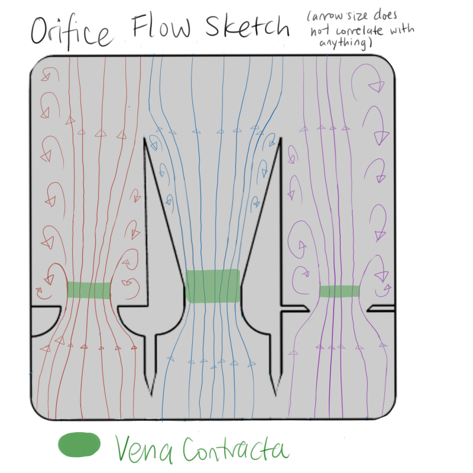
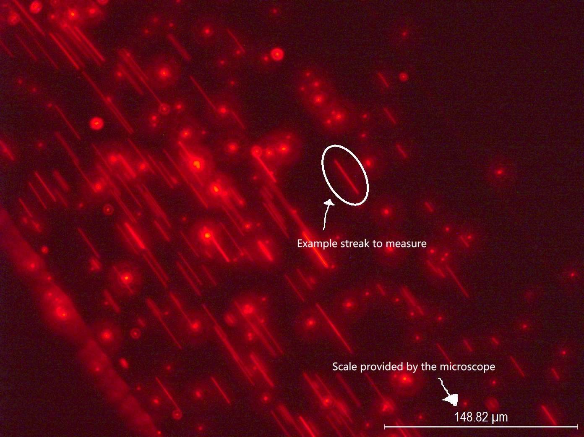
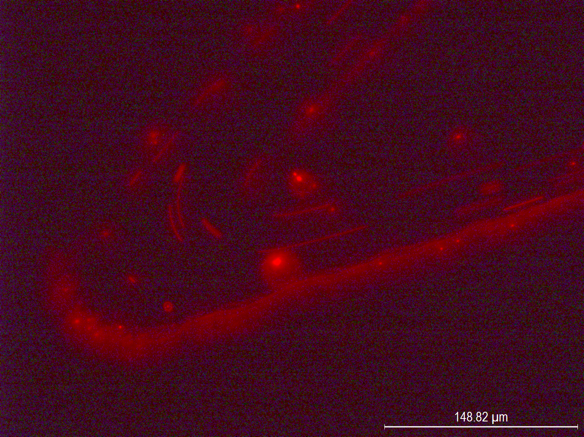

What are the physical labs I've done?
To set the definition, "physical" labs are basically just experiments that I had to write formal lab reports on. These include labs from classical mechanics, thermodynamics, fluid mechanics, and more!
These experiments span multiple weeks, requiring a high level of precision, knowledge from other courses (mainly programming), and care to detail, which is reflected through the amount of content that needs to be included in the lab reports. Still, I really enjoyed how these labs brought the abstract knowledge learned in lectures into a real environment, which made me appreciate how scientists from the past derived equations used today.
Physics: A Glance into Past Experiments
PHY180 was my classical mechanics course, and I focused on the properties of a simple pendulum. I built my own experimental setup with household items, and I was able to derive the relationship between length and pendulum period, amplitude decay, and quality factor. However, the most valuable lessons I learned from this lab was actually the importance of determining the uncertainty, and the difficulty of saying more with less, which took many reiterations to improve.

In PHY293, my labs focused more on light and waves, which required a higher level of precision than the simple pendulum. In my experiment on the Rydberg constant, a large part was observing blurry, thin, lines with a spectrometer to determine their wavelengths, and I had to derive a reasonable error value based on the equipment and environment. A little inaccuracy in centimeters from the vernier scale could correspond to a significant error in nanometres from the wavelength! Apart from getting much better at LaTeX, I learned that the largest value of these reports is the methology, uncertainty analysis, and procedures, since the reader should be able to recreate my lab!


Another lab I did in PHY293 was interferometry, and yet again this raised the precision level. This is essentially the method that is used by scientists to measure the wavelength of light! The entire lab revolved around aligning the light path between two lenses to create an interference pattern. Then, the distance between the lenses were adjusted microscopically to count fringes, which could calculate the wavelength of the light beam.

Thermodynamics and Heat Transfer: Seeing Laws in Action
In CHE260, I completed an Ideal Gas Law Lab with a team of new classmates, but after so much Praxis I was quite adept with working alongside new classmates. Through controlling the values between two chambers filled with gas, we were able to show that the Ideal Gas Law holds true as long as the chambers are in equilibrium.

The next lab I did in the course was about the First Law of Thermodynamics - energy cannot be created or destroyed in an isolated system. But evidentally, I have yet to complete this lab, so this will be updated in the future~
Fluid Dynamics: Observing Streamlines, Pathlines, and Streaklines!
The AER210 course is all about understanding the complex behaviour of fluid dynamics, and I had a lot of opportunity to see how the environment affects flow through my Flow Visualization Lab. Through observing fluids as they pass different nozzles, I learned that even a small change in the orifice can disrupt the fluid flow by a lot! For example, there are 3 similar nozzles in orifice below, but the resulting flow is quite different.

To better understand the quantitative values of fluid flow, the next lab, microfluidics, allowed me to actually measure the velocities of the fluid as it passes through different channels. Similarly, individual frames of the flow were analyzed to help derive and understand equations used in fluid mechanics.


The Big Takeaway from these Labs
Truthfully, I'm likely not going to major in physics, thermodynamics, or fluid dynamics. Past me would wonder, why bother doing all these experiments if I'm never going to use them in the future?
Yet just like how in a lab report, the most valuable sections are the methology and error analysis, it's not what I did in the lab that's important, but rather the process. I learned a lot of useful skills throughout the journey, like using code to help analyze data, measuring the magnitude of errors, or even just enjoying the beauty of these labs and equations. And who knows, maybe one day, I'll see a rainbow and be reminded of how I saw the colourful emission spectra of Krypton.